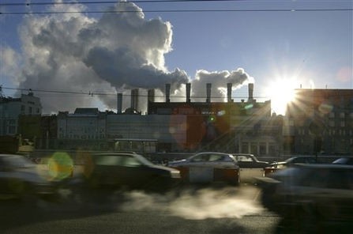
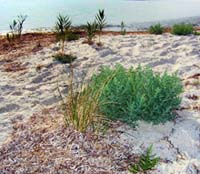
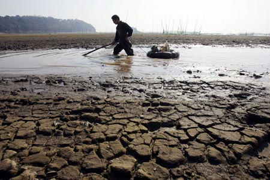

Екологічні проблеми в Україніі та Поліссі
 Головні причини й джерела розвитку екологічної кризи
Головні причини й джерела розвитку екологічної кризиОб'єктивний аналіз сучасної економічної ситуації, причин і джерел погіршення екологічного стану природного середовища України, погіршення здоров'я людей, виникнення демографічної кризи став можливим лише кілька років тому завдяки розсекреченню великої кількості архівних матеріалів (соціально-історичних, політичних, партійних, соціально-економічних та ін.) і допоміг чітко визначити основні причини, джерела, динаміку й напрями розвитку екологічної ситуації у межах нашої держави. Такими причинами, як уже частково згадувалось, виявилися:

1. Екстенсивне використання всіх видів природних ресурсів, що тривало протягом десятиліть, без врахування можливостей природних регіонів до самовідтворення й самоочищення.2. Довготривале адміністративно-командне концентрування на невеликих площах великої кількості надпотужних хімічних, металургійних, нафтопереробних і військових промислових комплексів та інших «гігантів соціалістичної індустрії», прискорена реалізація гігантоманських планів втручання в природне середовище.
3. Повне нехтування традиціями господарювання, можливостями природи регіонів і інтересами корінного населення.
4. Перехімізація сільського господарства й хибні засади його організації (типу величезних колгоспно-радгоспних господарств).
5. Розгортання меліораційних робіт і їх проведення у величезних обсягах без належних наукових обгрунтувань і ефективних технологій.
6. Повна відсутність об'єктивних довгострокових екологічних експертиз усіх планів і проектів розвитку промислового господарства, енергетики, транспорту протягом повоєнного періоду.
7. Використання на переважній більшості виробництв старих і дуже старих технологій і обладнання, які вже давно потребують заміни.
8. Відсутність ефективно діючих законів щодо охорони природного середовища й підзаконних актів для їх ефективної реалізації.
9. Відсутність постійної об'єктивної інформації широких мас населення про екологічний стан довкілля, причини його погіршення, винуватців забруднень і заходи для поліпшення ситуації.
10. Надзвичайно низький рівень екологічної освіти не лише широких мас населення, а й керівників підприємств, урядових організацій, загальна низька екологічна свідомість і культура.
11. Різке прискорення негативних економічних, соціально-політичних і екологічних процесів в Україні в зв'язку з найбільшою техногенною катастрофою XX ст.— аварією на Чорнобильській АЕС.
12. Відсутність дійових економічних стимулів ресурсо- й енергозбереження.
13. Відсутність дійового державного контролю за виконанням законів про охорону природи й системи ефективного покарання за шкоду довкіллю.
Основними антропогенними джерелами розростання екологічної кризи в Україні є перш за все великі промислові комплекси — ненажерливі споживачі сировини, енергії, води, повітря, земельного простору, транспорту й водночас страхітливі отруювачі довкілля практично всіма видами забруднень (механічних, хімічних, фізичних, біохімічних). Сконцентровані вони навколо родовищ корисних копалин, великих міст і водних об'єктів: Донеччина, Центральне Придніпров'я, Криворіжжя, Прикарпаття, Керч, Маріуполь, більшість обласних центрів. Серед цих об'єктів найбільшими забруднювачами довкілля є металургійні, хімічні, нафтопереробні та машинобудівні заводи, кар'єри та збагачувальні фабрики, деякі військові підприємства.
Була й залишається найнебезпечнішим джерелом шкоди навколишньому середовищу військова діяльність: за обсягами використання палива для техніки й забруднень від його спалювання в двигунах літаків, танків, автомобілів тощо; за обсягами використання мінеральної сировини, необхідної для виробництва військової техніки; обсягами споживання енергії; витратами на утримання армії і військових підприємств; обсягами забруднень довкілля від цих підприємств і, звичайно, за розмірами збитків, пов'язаних з випробуванням різних видів зброї, у тому числі й атомної, а також проведенням маневрів, навчань і воєн. Україна повною мірою відчула це протягом останнього століття.
Найбільше забруднюють довкілля об'єкти енергетики, перш за все ТЕЦ і ГРЕС. Поглинаючи величезну кількість нафтопродуктів, газу та вугілля, вони викидають в атмосферу мільйони кубічних метрів шкідливих газів, аерозолів і сажі, займають сотні гектар землі шлаками й золою.
Іншим джерелом забруднення природи України є транспорт — автомобільний, повітряний, водний, залізничний. В усіх великих містах України частка забруднень повітря від автотранспорту останнім часом становить 70—90 % загального рівня забруднень.
Нарешті, для наших сільськогосподарських районів найбільш характерним джерелом забруднень природних вод і грунтів є надлишок мінеральних добрив і пестицидів, які десятками років у величезних кількостях використовувалися на полях. Лише 5 — 10 % їх йшло на користь (поглиналося рослинами), а 90 % змива¬лося дощовими й сніговими водами, здувалося вітрами й осідало в річках, озерах, грунтах і ґрунтових водах, стаючи шкідливими компонентами екосистем.
Небезпечними забруднювачами довкілля є також об'єкти, що генерують потужні фізичні поля — електромагнітні, радіаційні, шумові, ультразвукові й інфразвукові, теплові, вібраційні (великі радіостанції, теплоцентралі, РЛС, трансформаторні підстанції, ЛЕП, ретрансляційні станції, спеціальні фізичні лабораторії та установки, кібернетичні центри, АЕС тощо).
Сучасний напружений екологічний стан більшості регіонів України (Центральне Полісся, Передкарпаття, Причорномор'я, Крим, Азовське море, Центральне Придніпров'я і Донеччина) є наслідком хибної екологічної політики наших урядовців протягом останніх десятків років: розвиток територіально-промислових комплексів, енергетики, сільського господарства без врахування специфіки природних умов краю, інтересів українського народу, екологічних законів. Для підтвердження сказаного наведемо деякі факти про забруднення й шкоду довкіллю України від основних видів виробничої діяльності на її території.
Підприємства металургії і енергетики щорічно викидають у повітря відповідно 35 % і 32 % усіх забруднень від стаціонарних джерел, є головними забруднювачами повітря України (міста Макіївка, Маріуполь, Комунарськ, Харцизьк, Дніпропетровськ, Запоріжжя, Дніпродзержинськ та ін.). Металургійні підприємства оснащені очисним обладнанням лише на 30—50 %, яке до того ж застаріле або не діє зовсім.
Головними забруднювачами довкілля важкими металами, особливо миш'яком і свинцем, є підприємства кольорової металургії; вони ж забруднюють довкілля сірчаною й азотною кислотами (м. Костянтинівка — завод «Укрцинк», м. Запоріжжя — Дніпровський, Микитівський ртутний комбінати та ін.).Чорна металургія — основний забруднювач вод фенолами, нафтопродуктами, сульфатами.
ТЕС виробляють в Україні понад 70 % електроенергії (близько 37,6 тис. МВт); майже всі вони розміщені в містах і промислових центрах і є найбільшими забруднювачами довкілля серед усіх об'єктів енергетики. Основними компонентами їхніх забруднень є тверді частки палива (зола), сірчаний ангідрид, окиси азоту. Загальна кількість викидів енергетичних об'єктів складає близько 2,3 — 2,5 млн т за рік. Решту електроенергії виробляють ГЕС та АЕС. Найбільші наші гідроелектростанції зосереджені на Дніпрі (Київська, Канівська, Кременчуцька, Дніпродзержинська, Запорізька, Каховська). ГЕС вважаються екологічно найбільш безпечними, але створення каскаду водосховищ на Дніпрі, що затопили близько 7 тис. км2 прекрасних родючих заплавних земель і за період свого існування перетворилися на водойми-накопичувачі відходів і забруднень з навколишніх регіонів, призвело до значних негативних екологічних змін (підтоплення 100 тис. га прибережних земель, багаторазове зниження активності процесів самоочищення Дніпра, «цвітіння» водойм, зниження продуктивності рибних господарств тощо).
Дуже негативним з екологічної точки зору є наявність на території України п'яти АЕС (14 енергоблоків) — Чорнобильської, Рівненської, Хмельницької, Запорізької та Південно-Української. Зберігається не лише велика небезпека нових аварій на АЕС, але й додається дуже складна проблема поховання відходів ядерного палива і, в недалекому майбутньому, після відпрацювання належного ресурсу — поховання й ліквідація самих АЕС дуже складний, небезпечний і дорогий процес.
Дуже загрозливою для здоров'я людей і навколишнього середовища України залишається діяльність військово-промислового комплексу. В Україні щільність розміщення військових частин, об'єктів, оборонних підприємств, установ, військових навчальних закладів, полігонів, складів досить висока. Очисні споруди на військових об'єктах, котельнях, пунктах заправки ПММ, заводах або взагалі відсутні, або дуже погано забезпечують очищення промислових, побутових стоків. При цьому військові власті, прикриваючись завісою секретності, намагаються приховувати стан справ на цих об'єктах, створюють перешкоди для відвідування їх екологами. Найгірший стан — у причорноморських районах, особливо в Криму. Тут протягом десятків років об'єкти й кораблі Чорноморського флоту забруднювали води Чорного моря (у воді лише Севастопольської бухти вміст нафтопродуктів перевищує ГДК у 180 разів). Спеціалісти стверджують, що частини й об'єкти
Чорноморського флоту щодоби скидають в море близько 9 тис. м! неочищених стічних вод.
Дуже загрозливими для довкілля є порушення в більшості військових підрозділів правил зберігання ПММ і експлуатації систем їх транспортування. Втрати, витікання й розливи ПММ протягом тривалого часу (іноді десятиріч) навколо військових баз, аеродромів, складів на кілометри навкруги забруднили нафтою поверхневі й підземні води, є причиною появи в колодязях, ставках і річках «покладів» нафтопродуктів, або, ще гірше, дуже токсичних речовин (хром, кадмій, свинець, бензпірени та ін.). Прикладами можуть бути територія парку Олександрія в Білій Церкві, міста Узин, Васильків (Київська обл.), Дубно (Рівненська обл.), Велика Круча (Полтавська обл.), Озерне (Житомирщина), Чугуїв (Харківська обл.), Луцьк, Керч, Севастополь, Чернівці та ін. У багатьох військових частинах не дотримуються правил захисту цивільного населення від згубного електромагнітного впливу й високочастотних випромінювань від потужних РЛС. Гостро стоять проблеми використання лісів і сільськогосподарських угідь військовими під полігони, стрільбища, мисливські господарства, навчальні центри (загальна площа цих земель перевищує 100 тис. га).
Одним з головних забруднювачів довкілля є також хімічна промисловість, об'єкти якої викидають у повітря сірчаний ангідрид, окиси азоту, вуглеводні тощо. Найбільшої шкоди вони завдають у Прикарпатті (Ново-Роздольський сірчаний комбінат, Калуський калійний концерн), на Донбасі, в Присивашші (Красноперекопськ), Одесі, Вінниці, Сумах, Рівному (підприємства об'єднання «Азот»), які забруднюють довкілля фосгеном, вінілхлоридом, хлористим воднем, фенолом, аміаком — дуже небезпечними токсикантами. Дуже шкодять довкіллю також хімічні підприємства, які виробляють отрутохімікати (міста Первомайськ, Калуш, Маріуполь, Дніпродзержинськ), синтетичні продукти (підприємства об'єднань «Хімволокно», «Хлорвініл», «Дніпрошина», «Укрнаф-тохім» та ін.). Сумним фактом є те, що майже всі підприємства хімічної промисловості мають застаріле обладнання, порушують межі санітарно-захисних зон, не мають очисних споруд, або мають дуже неефективні.
Найбільшим серед промислових підприємств в Україні є машинобудівний комплекс, тому що в державі для цього склалися досить сприятливі передумови: могутня металургійна база, густа транспортна мережа, великі обсяги використання машин і приладів, висококваліфіковані кадри. На українських машинобудівних заводах виробляють різноманітну продукцію від побутової техніки до найскладніших сучасних машин — обладнання для АЕС, космічну техніку, турбіни, літаки, що не мають аналогів у світі. Найвища концентрація машинобудівної промисловості характерна для Дніпропетровська, Харкова, Кривого Рога, Краматорська, Маріуполя, Донецька.
Машинобудівна промисловість має складну структуру й багато типів машинобудування: важкого, електротехнічного, транспортного, приладо- й верстатобудування, радіоелектронного та ін. Кожен з типів машинобудування має свої екологічні особливості — склад і кількість відходів, токсичність забруднень, режим їх викидів у повітря та зі стічними водами.
Як і інші види промисловості, машинобудівна галузь тяжіє до районів розвитку металургії, сконцентрована в містах і дуже шкодить їх екологічному стану великими обсягами відходів, забруднень повітря і води. Так, в Дніпропетровську лише одне виробниче об'єднання «Дніпроважмаш» щорічно скидає в Дніпро 2365,2 тис. м' забруднених стічних вод, завод прокатних валків — 250 тис. м3. У Запоріжжі викиди Дніпровського електродного заводу в атмосферу становлять 35 % загальноміських, причому 80 % з них є канцерогенними речовинами першого класу небезпечності. До речі, понад 50 % всіх викидів у атмосферу цього міста дає ПО «Запоріжсталь» (понад 150 тис. т шкідливих речовин щороку). Електротехнічних заводів в Україні діє понад сотню. Але незважаючи на те, що більшість з них (а також приладобудівних і радіоелектронних) збудовано в останні десятиліття, на багатьох з них газо- й водоочисні споруди або несправні, або діють неефективно (одеський «Агроагрегат», миколаївський «Ніконд», чернівецький металообробний, дніпропетровський «Південний машинобудівний» та ін.).
Дуже екологічно небезпечною є цементна промисловість. Найбільше екологічних проблем вона створює в Донецькій, Дніпропетровській і Харківській областях, забруднюючи довкілля пилом, сірчаним ангідридом та окисами азоту. Саме в цій галузі виробництва на підприємствах найгірше виконуються природоохоронні заходи, тому, наприклад, перевищення вмісту пилу у викидах становить майже всюди 5 —10 ГДК, а із забрудненими стічними водами в річки щорічно скидаються сотні тонн органічних і завислих речовин, солей та інших шкідливих сполук.
Великої шкоди рельєфу, земельним ресурсам, ґрунтовим водам завдає розробка кар'єрів будівельних матеріалів (вапняку, піску, граніту, лабрадориту тощо) у Житомирській, Вінницькій, Дніпропетровській, Кіровоградській областях.
Сільськогосподарське виробництво в Україні сьогодні значно
негативніше, ніж кілька десятиліть тому, впливає на природне середовище, через нераціональну організацію меліоративних робіт та необгрунтоване, технологічно не витримане використання міндобрив і отрутохімікатів, а також недбале їх зберігання, транспортування. Природне середовище забруднюється сполуками азоту, фосфору, калію, радіоактивними елементами (останні є домішками в фосфорних міндобривах), важкими металами (міддю, цинком, свинцем, значні перевищення ГДК яких виявлені в 1992—93 рр. у 5 % сільськогосподарської продукції), залишками гербіцидів симтриазинової групи. З 170 пестицидів, що застосовуються в Україні, 49 особливо небезпечні. Останнім часом мало місце також використання токсичних пестицидів, що завозяться в Україну західними фірмами і заборонені на Заході для використання.
Обсяги пестицидів і міндобрив, які надходять на поля України, становлять більше 90 000 т і 4,5 млн т відповідно. Площа земель, забруднених стійкими хлорорганічними препаратами, становить близько 8 млн га, на кількох сотнях тисячах гектарів їх вміст значно перевищує ГДК.
Дуже напружена екологічна ситуація склалася навколо (в радіусі кількох кілометрів) великих тваринницьких комплексів України. Найбільші з них (свиноферми та тваринницькі господарства, де вирощують 30—100 тис. голів і більше) продукують щодоби до 2—3 тис. т екскрементів, які ці господарства не встигають переробити. В результаті їх розкладу й гниття виділяються великі маси аміаку, азоту, сірководню, органічних кислот, шкідливих мікроорганізмів, що забруднюють довкілля й спричиняють хвороби, епідемії й загибель в ґрунтових водах, річках і ставках риби, цілих біотичних угруповань. На кілометри від комплексів повітряними масами розносяться сморід, патогенні мікроби, гельмінти.
Особливо загрозливою для землеробства є посилена антропогенною діяльністю ерозія (площинний змив грунту, лінійний розмив земель), особливо в лісостеповій і степовій зонах. Понад 4 млн га орних земель уражено дефляцією грунтів (видуванням). Пилові бурі, які за останні 100 років виникали в лісостеповій зоні України 23 рази, а за останні 40 років — 16 раз, знесли мільйони тонн родючих грунтів у Луганській, Донецькій, Запорізькій, Дніпропетровській, Херсонській областях та Криму. У 1960 р. пиловими бурями був охоплений весь південь України площею близько 5 млн га, при цьому в Криму, Запорізькій і Херсонській областях повністю знищені посіви на площі близько 5 тис. га. Розвиток пилових бур спричинює деградацію грунтів через їх активне виснаження й неправильні агротехнічні заходи.Перехімізація сільського господарства України, що призвела до накопичення в грунтах, продуктах харчування, воді шкідливих для здоров'я людей і тварин, а також рослин хімічних елементів і сполук (нітратів, нітритів, важких металів, пестицидів), стала причиною розвитку ще одного негативного явища — втрати рекреаційних ресурсів. Через значні забруднення великі площі рекреаційних зон, особливо в південних районах України, де зосереджено до ЗО % всього курортно-рекреаційного фонду, почали втрачати свої рекреаційні, оздоровчі функції (Приазов'я, Одещина, Крим).

Великої шкоди грунтам завдає використання важкої сільгосптехніки на полях, яка регулярно переущільнює землю, значно знижуючи її пухкість, насиченість повітрям, активність обмінних біохімічних процесів.Окремо слід акцентувати увагу на екологічній ролі транспорту і особливостях транспортних забруднень в Україні. Мережа транспортних шляхів в Україні досить густа, кількість і активність автотранспорту в містах висока, і шкоди довкіллю він завдає дуже значної. Основними причинами є застарілі конструкції двигунів, характер палива (нафтопродукти, а не газ чи інші менш токсичні речовини) і погана організація руху, особливо в містах, на перехрестях вулиць, мостопереходах. У відпрацьованих газах, що викидаються нашими автомобілями, виявлено до 280 різних шкідливих речовин, серед яких особливу небезпеку становлять бензпірени (канцерогенна речовина, в мільйон разів отруйніша за чадний газ), оксиди азоту, свинець, ртуть, альдегіди, окиси вуглецю й сірки, сажа, вуглеводні.
Автотранспорт на перевезення одного й того ж вантажу потребує в 6,5 раза більше палива, ніж залізничний, і в 5 раз більше, ніж водний. А в Україні налічується понад 1 млн вантажних і понад 2,5 млн легкових автомобілів, і кожен із них щороку спалює від 12 до ЗО т високооктанового російського бензину, збагаченого свинцем (до 0,36 г/л, в той час як в бензинах Великобританії 0,15 г/л, а СІЛА — 0,013 г/л!). Треба зауважити, що токсичність відпрацьованих газів наших дизельних двигунів набагато вища від карбюраторних, оскільки ці гази містять багато окисів вуглецю, діоксидів азоту й сірки, а також сажі (до 16 —18 кг з кожної тонни дизпалива). У 1992—1993 рр. викиди забруднюючих речовин автотранспортом складали близько 5,5 млн т на рік (39 % від всього обсягу викидів в Україні). Цей показник такий значний тому, що понад 20 % транспортних засобів експлуатуються з перевищенням установлених нормативів вмісту шкідливих речовин у відпрацьованих газах (старі, зношені двигуни,
неякісне паливо). Від транспортних забруднень газами й шумом терплять усі міста України, особливо великі. Доля забруднень повітря від автотранспорту у деяких великих містах України становить від 40 до 80 % загальних забруднень.
Залізничний транспорт екологічно чистіший, особливо електричний. Стало проблемою лише сильне забруднення полотна залізниць шириною в кілька метрів по обидва боки від колії і самої колії нечистотами з вагонних туалетів. В усіх цивілізованих країнах туалети пасажирських вагонів обладнані спеціальними ємкостями, і нечистоти не викидаються назовні. Екологічні й медичні обстеження виявили, що останнім часом, особливо в теплі періоди року, вищеназване забруднення колій нечистотами та продуктами їх розкладу стали причиною захворювань значної кількості пасажирів та працівників залізниць різними хворобами шлунка та легенів.
Досить відчутної екологічної шкоди завдає Дніпру з його водосховищами, Дунаю, Дністру, а також Чорному й Азовському морям водний транспорт, перш за все — від недотримання правил перевезення й перекачування нафтопродуктів, аварій, очищення танків, змивів, через шумо-вібраційні впливи, створення хвиль, що руйнують береги водосховищ тощо.
Все більшою екологічною проблемою міст України, особливо великих і курортних, є проблема очищення різних комунальних відходів — побутових та промислових, перероблення цих відходів. Щорічно у водні об'єкти України скидається близько 4 млрд м! забруднених стоків. Теоретично існуючі методи очищення в змозі очистити стічні води на 95 — 96 % (хоча й цього недосить), а на практиці це ніколи не досягається, не перевищуючи в кращому разі 70 — 85 %. Очищення стічних вод до санітарних норм в усьому світі (а у нас тим більше) пов'язане зі значними витратами, тому чекати поліпшення справ у цій галузі найближчим часом надії нема. Частковим виходом є перехід на замкнені водо-оборотні системи на підприємствах. Найбільше неочищених стічних вод скидають міста Маріуполь (253,8 млн м3), Дніпропетровськ (188 млн м3), Запоріжжя (65 млн м3), Київ (29,0 млн м3). А в цілому всі великі міста України забруднюють водне середовище, хоч і порівняно менше. Причини все ті ж — застаріле устаткування, а то й відсутність очисних споруд, аварійні скиди (в 1992 р. їх було зафіксовано 263 і більше всього — в Маріуполі).
Останнім часом в Україні активізувались екзогенні геологічні процеси — зсуви, селі, змиви, ерозія поверхні, карстоутворення, яроутворення, засолення грунтів, суфозія, спровоковані антропогенною діяльністю (будівництвом різних об'єктів, шляхів, добу-ки. На 50 % освоєних площ схилів розвиваються зсуви (Крим, Закарпаття, Прикарпаття, Одещина, Харківщина та ін.).
Спеціалістами в зонах активної антропогенної діяльності зафіксовано вже 13,8 тис. зсувних ділянок і 2,5 тис. карстово-суфозійних об'єктів. У Криму, Карпатах, Закарпатті й Прикарпатті на 70 % гірських водозборів і схилів розвинулись селеві процеси. В районах поширення лесових порід (65 % площі України) має місце просідання поверхні через підтоплення лесових грунтів (на 42 % площі розвитку лесу), 18 % території України вражено яружною ерозією (Хмельницька, Вінницька, Чернівецька, Одеська, Київська, Черкаська, Кіровоградська області, Крим).
У Поліссі мають місце процеси підтоплення, на півдні України 11 — 25 % площ угідь терплять від засолення, спричиненого неправильним зрошенням. Антропогенна діяльність вздовж Чорноморського й Азовського узбережжів повсюдно супроводжується активізацією морської абразії берегів.
Майже на 70 % території України значно знизилася сейсмічна стійкість грунтів і порід, особливо на півдні, в Донбасі, Прикарпатті, чому сприяла поява тисяч свердловин, шахт, кар'єрів. Несприятлива інженерно-сейсмологічна обстановка і в районі Чорнобильської АЕС, де за рахунок комплексу природних та техногенних факторів зниження сейсмічної стійкості максимальне. Те ж саме характерне й для району Рівненської АЕС, що відбувається за рахунок техногенного карсту й підтоплення. Техногенні фактори в межах зони впливу цих АЕС можуть підсилити землетрус на 1 —1,5 бала, тобто довести його силу до 5—7 балів.
При плануванні розвитку господарства України, її рекреаційних зон необхідно враховувати також вплив геоаномальних зон як для здоров'я людей, біот, так і для стійкості фундаментів, схилів, споруд. Геоаномальні зони збігаються із зонами розвитку печер і карстових пустот, розломами в земній корі; для них характерні гравітаційні, теплові, електромагнітні, геохімічні аномалії, активна міграція різних газів і розчинів у земній корі, підвищена сейсмічна активність.
Яскравими ілюстраціями характеристики сучасного екологічного стану України можуть бути ще кілька фактів, узятих з документів Мінприроди та Міністерства охорони здоров'я України. До другої світової війни українське Полісся було одним із екологічно найблагополучніших регіонів Європи, славилося чистими, сповненими життям лісами, річками, чудовими озерами, своїми грибами, ягодами, рибою, звіриною, унікальними представниками флори й фауни, яких немає ніде в світі. Сьогодні Полісся — регіон з найбільш загрозливою екологічною ситуацією в Україні і Європі, де активна вирубка лісів, необгрунтовані обсяги осушення боліт і видобутку торфу, перезабруднення хімічними препаратами сільгоспугідь, промислові забруднення, негативні наслідки розробки гранітних кар'єрів і, нарешті, жорстокий ядерний удар Чорнобильської аварії призвели до критичного екологічного стану. В дуже напруженому екологічному стані перебуває Київське водосховище, донні відклади якого й водні організми перезабруднені радіонуклідами.
Район Донбасу в межах трикутника Донецьк — Луганськ — Рубіжне, де сконцентровані найбрудніші з екологічної точки зору промислові виробництва, шахти, об'єкти енергетики, військові підприємства, досяг стану, коли почалася деградація всіх екосистем місцевих ландшафтів. У Лисичансько-Рубежанському промисловому районі, наприклад, дуже перезабруднені не лише поверхневі, а й підземні води на площі більше 120 км 2. 1417 териконів постійно отруюють атмосферу шкідливими газами, займаючи до того ж тисячі гектарів родючих земель. У річку Самару з шахт Західного Донбасу щорічно скидається близько 20 млн м1 високомінералізованих шахтних вод і ще близько 60 млн м3 таких же вод з Центрального Донбасу. Мінералізація води в річках Інгул, Самара, Інгулець перевищує природний фон у 10 і більше разів. Лише в р. Інгулець з регіону Кривбасу щорічно скидається близько 100 млн м брудних стоків. Ці річки забруднюються важкими металами й радіоактивними речовинами (останні надходять з району родовищ уранових руд під Жовтими Водами). Однією з найбрудніших в Україні вважається р. Сіверський Донець.
У річки Сіверський Донець і Дністер щорічно скидається близько 200 млн м3 перезабруднених стоків. Крім того, Дністер опинився на грані виснаження через непосильні для нього обсяги водозабору для потреб промисловості і меліорації — стік її зменшився з 6 до 3 млн м3 на рік.
За останні роки в атмосферу України викинуто понад 100 млн т шкідливих речовин.
Через різке погіршення екологічного стану акваторії у Чорному морі за останні 100 років стадо дельфінів зменшилося з 1 млн до 80—90 тис.
1. Загальні відомості про природні умови
255
Дефіцит води в Україні сьогодні становить близько 4 млрд м3. Практично всі поверхневі, грунтові й частково підземні води забруднені промисловими, побутовими, сільськогосподарськими стоками й не відповідають за якістю навіть прийнятим на сьогодні заниженим санітарним нормам. Щороку у водойми України потрапляє близько 5 млн т солей, 190 млн м3 гнійних стоків; у Дніпро при цьому скидається близько 1300 млн м3 брудних стоків. Гострий дефіцит якісних питних вод відчувається вже не лише в містах Криму, Донбасу, в Одесі, Львові, Харкові, айв Києві, Житомирі, Вінниці, Херсоні, Нікополі, Запоріжжі, Дрогобичі, Білій Церкві та ін. Якість питних підземних вод теж постійно знижується. Найбруднішими річками в Україні вважаються Ли-бідь, що протікає через Київ, і Полтва (Львівська обл.). У р. Ли-бідь, в басейні якої розміщено близько 300 підприємств (з них 100 скидають зовсім неочищені стоки), солей у воді більше, ніж у Дніпрі, в 3 рази, нітратів — у 900 разів вище ГДК, міді — в 50, цинку — в 4, а свинцю (поблизу гирла) міститься 3,5 кг на тонну води (1992 р.). У р. Полтві у воді зовсім відсутній розчинений кисень, натомість є сірководень. Вміст основних забруднюючих речовин становить відповідно: легкоокисних органічних речовин — 3 — 22 ГДК, азоту амонійного — 22 — 35, азоту нітритно-го — 3 — 7, нафтопродуктів — 6 —13, сполук міді — 9, цинку — 4, марганцю — 9 ГДК. У деякі роки концентрації цих речовин були ще вищими.
Понад 800 сіл України нині втратили власні джерела питної води (воду доводиться завозити чи подавати по трубах здаля). Особливо гостро ця проблема відчувається на Донбасі, Криворіжжі та Дніпропетровщині.

Українські чорноземи раніше складали близько 50 % світового банку чорноземів. Нині надмірною експлуатацією й забрудненнями виведено з ладу близько 60 % наших чорноземів; щорічно втрачається близько 100 тис. га родючих грунтів, зноситься близько 18 млн т гумусу, кількість якого у порівнянні з колишньою зменшилась в грунтах у 6 разів. Розорані землі в Україні становлять близько 90 % площі степів і лісостепів; але вони вже дуже виснажені, перезабруднені міндобривами та пестицидами.За останні 100 років антропогенна діяльність завдала великої шкоди тваринному й рослинному світові України. Лише в повоєнні роки в Донеччині та Криму зникло близько 40 видів рослин, в Карпатах — 20. У «Червону книгу» України сьогодні занесено більше 800 видів рослин і тварин, яким серйозно загрожує вимирання або знищення.
На конференції ООН «Навколишнє середовище й розвиток» в Ріо-де-Жанейро Україною підписано Конвенцію щодо збереження біологічної різноманітності. Виконанню вимог цієї Конвенції значною мірою сприятиме Закон України «Про охорону природного навколишнього середовища». Велике значення для збереження біологічної різноманітності матиме прийняття Законів України «Про охорону тваринного світу» та «Про охорону рослинного світу», а також активність комісії з Червоної книги України.
Охорона окремих видів рослин і тварин — найважливіша складова частина охорони навколишнього середовища. Важко відділити охорону рослин і тварин або, в широкому розумінні, генофонду природної флори й фауни, від проблем охорони довкілля.
Червона книга — це добірка фактів про унікальних мешканців країни, над якими нависла загроза зникнення. У 1980 р. вийшла у світ невеликим тиражем «Червона книга Української PCP», яка містила дані про 85 видів тварин і 151 вид рослин. Протягом наступних років завдяки праці вчених вона була доповнена багатьма відомостями. У 1988 р. з'явився довідник «Редкие и исчезающие растения и животные Украины», в якому розглянуто поширення, чисельність та деякі екологічні особливості набагато більшої кількості рідкісних та зникаючих видів рослин (213) і тварин (131). У довіднику розглянуто також шляхи й форми їх охорони.
При Мінприроди України постійно діє комісія з Червоної книги, яка, враховуючи пропозиції фахівців, вносить зміни про неї. Розроблене й затверджене Верховною Радою України Положення про Червону книгу України.
Велике значення для уточнення відомостей, наведених у цій книзі, мають так звані кадастрові роботи, тобто цілеспрямовані дослідження поширення й чисельності окремих видів рослин і тварин. Мінприроди працює над розробкою наукових основ охорони й відтворення рідкісних і зникаючих рослин, а також над створенням комп'ютерної бази даних про види рослин і тварин, які занесені до Червоної книги України.
Сумарні збитки України в 1990 р. за рахунок недобору корисної біомаси (через скорочення сільгоспугідь, зниження врожайності, вирубування й загибель лісів від кислотних дощів, пожеж, радіації) становили, за даними спеціалістів статуправлін-ня, близько 7 млрд крб. (за цінами 1990 p.).
Через перезабруднення запаси риби в більшості річок України скоротилися в десятки разів. Значно зменшилось поголів'я й знизилась якість великої рогатої худоби, майже щезло конярство — дуже корисна галузь господарства.
Сьогодні в Україні швидко розвивається демографічна криза. Починаючи з 1991 р., в Україні спостерігається від'ємний приріст населення. У 1993—1994 рр. смертність перевищувала народжуваність на кілька сотень тисяч чоловік. Смертність дітей у нас одна з найвищих у світі; 12—13 % шлюбів бездітні, на 38 % зросла захворюваність онкологічними хворобами, у 2 рази збільшилась кількість психічних розладів, у 2 — 2,5 раза зросли захворювання на виразку шлунку, бронхіальну астму, серцево-судинні та алергічні хвороби. Медичні статистичні дані 1992—1993 рр. свідчать, що з кількох мільйонів обстежених жителів України хворих серед дорослого населення в середньому близько 70 %, серед дітей — 60 %, а серйозно хворих — відповідно ЗО і 50 %.
Медико-генетичними дослідженнями встановлено, що від тривалого забруднення природного середовища в апараті спадковості людини поступово накопичуються негативні генетичні зміни. Відомо, що коли ці зміни досягають 30 %, згідно з біологічними законами нація починає зникати. А в Донецько-Придніпровському регіоні цей показник вже досяг рівня 19—24 %.
При забрудненнях атмосфери, що перевищують норму в 1,2 — 1,5 раза, починаються імунні захворювання організму, а в Україні сьогодні діє близько 1700 шкідливих забруднювачів атмосфери, з них 1000 особливо небезпечних хімічних підприємств. Через вказані вище причини середня тривалість життя жителів України знизилася в середньому до 60 років у чоловіків і 75 років у жінок. Серед випускників київських шкіл лише 5—8 % вважаються сьогодні здоровими.
По матеріалах сайта : http://ecology.at.ua/